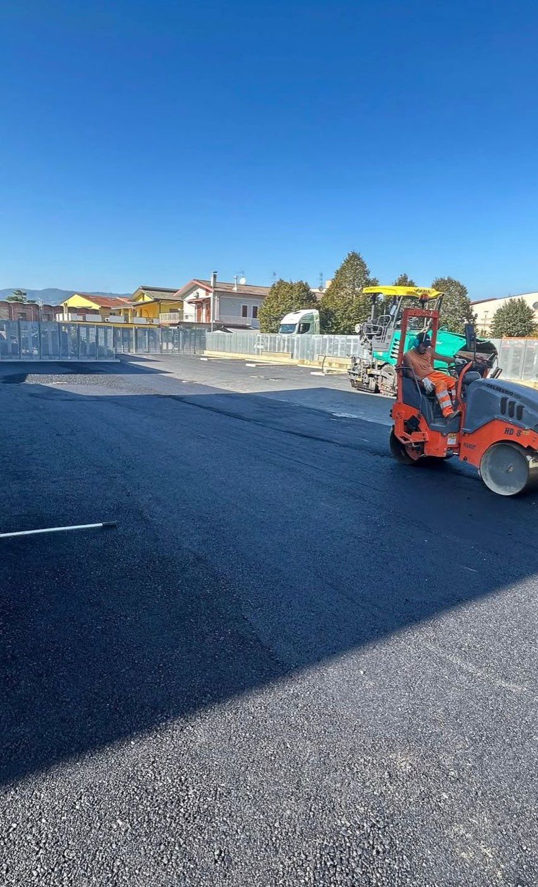

Dal cassonetto al tappeto di usura, con un interlocutore solo.
Realizziamo asfaltature stradali, di parcheggi e piazzali seguendo il cantiere dall'inizio alla consegna. Scavo, cassonetto, fondazione, cordoli, regimazione delle acque e compattazione li facciamo con i nostri mezzi; per la stesa del binder e del tappeto di usura lavoriamo da anni con una squadra specializzata di fiducia, che coordiniamo noi. Per il committente resta un interlocutore solo: noi.
Dove: Pescia, Valdinievole, Montecatini Terme, Monsummano Terme, Buggiano, Uzzano e tutta la provincia di Pistoia.


Ci mandi due foto del posto su WhatsApp: le diciamo se è fattibile e le fissiamo il sopralluogo.